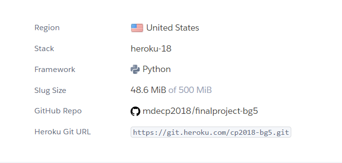
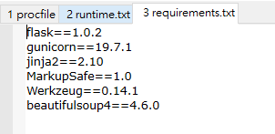
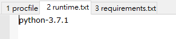
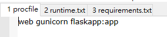

week11
heroku與github連接與使用heroku在動態網頁上能夠修改資訊:
heroku與github連接必須在github中加入兩項文字檔和一個資料檔分別為:runtime.txt、procfile、requirements.txt，在檔案中必須加入的文字且大小寫必須要正確，打小寫會影響到之後的成功與否而成功連接上heroku後就能夠直接更改動態網站且可以在heroku中顯示出來。
另外還有一種現在廣泛使用的軟體為javascrip，在撰寫後難以在回頭審視之前所撰寫的檔案也沒有排版之功能，所以我們用的python來當作學習的工具。
heroku動態分組網站網址:https://cp2018-bg5.herokuapp.com/
heroku連接github截圖:

需要更改之字串和內容



筆記:


week10 << Previous Next >> week12